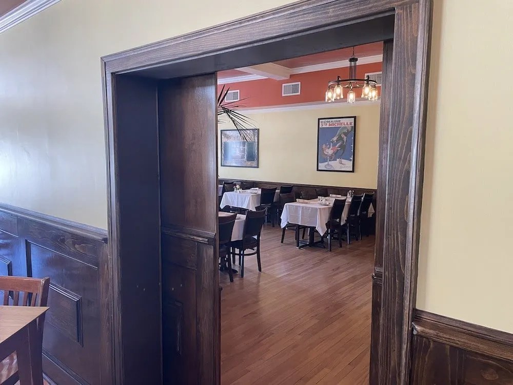

Your Event, Our Passion
Looking for the perfect private party venue in Wallingford, CT? Michael's Trattoria offers four private dining rooms in the heart of downtown Wallingford — accommodating intimate gatherings of 16 to large celebrations of 75 guests. Our dedicated team will make every detail unforgettable.
For over 30 years, Wallingford families and businesses have trusted Michael's Trattoria to host their most important private parties and celebrations. Our private dining spaces combine the warmth of our Italian hospitality with the exclusivity your event deserves.
Four Private Dining Rooms
Grand Room
Our largest private space — ideal for wedding receptions, corporate events, and large celebrations.
Bar Room
Private room with dedicated bar setup — perfect for cocktail-style events and social gatherings.
Garden Room
A warm, inviting space for rehearsal dinners, birthday parties, and mid-size celebrations.
Intimate Room
Cozy and private — ideal for business dinners, small family gatherings, and anniversary celebrations.
Every Room Includes
- Customized menus tailored to your event
- Full audio-visual capabilities for presentations and slideshows
- Dedicated event coordinator from planning to execution
- Full bar service with curated wine selections
- Flexible seating arrangements
Private Parties For Every Occasion
- Birthday celebrations and milestone anniversaries
- Rehearsal dinners and bridal showers
- Corporate dinners and business meetings
- Holiday parties and family gatherings
- Retirement parties and graduations
- Funeral luncheons and memorial gatherings
Ready to plan your private party? Call us to discuss your vision and let our team create a personalized experience for you and your guests.
Call (203) 269-5303